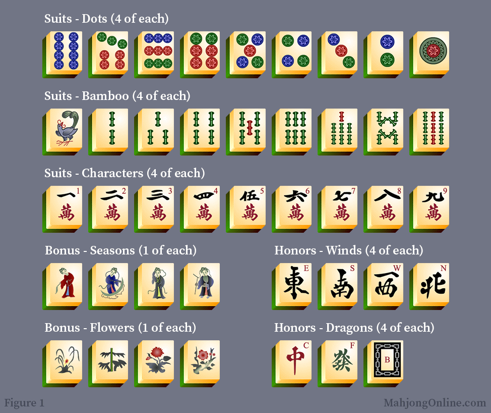
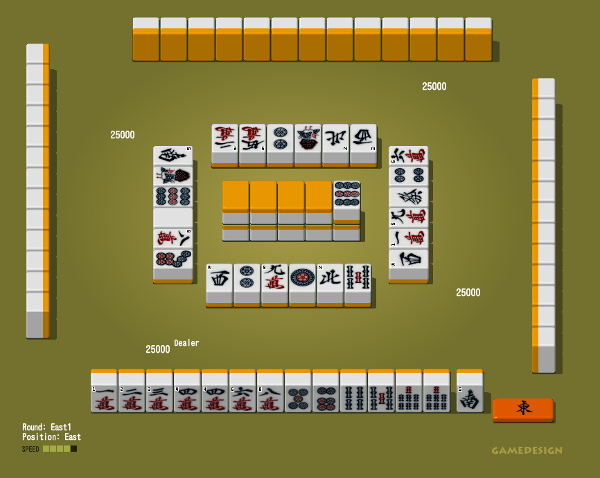
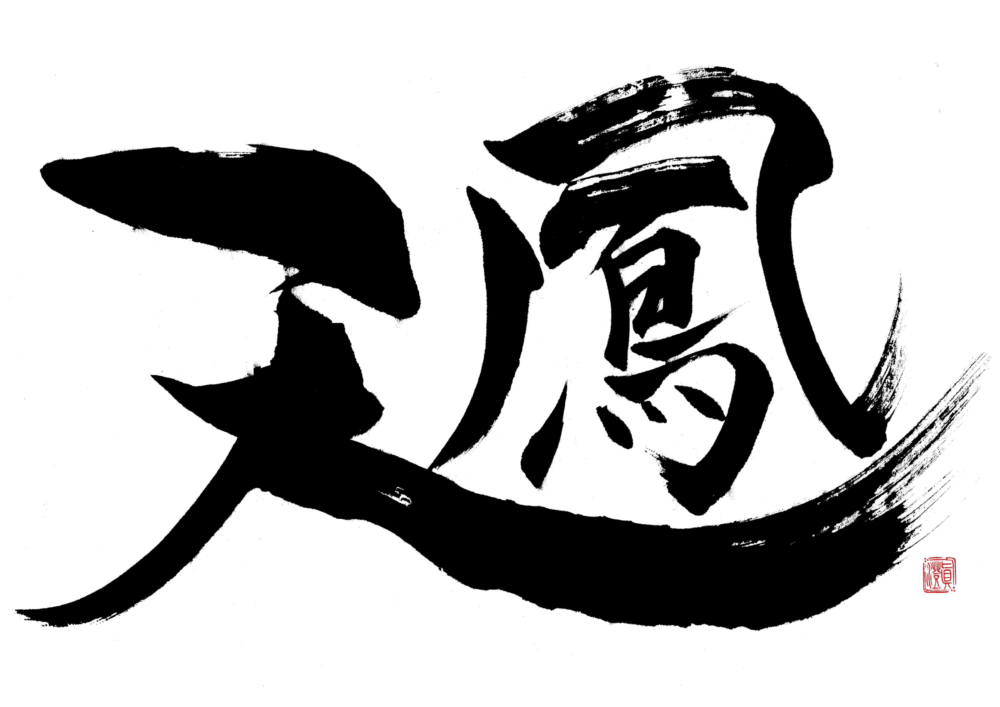

Tiles
In Riichi Mahjong, tiles are divided into several categories: suits and honors. Suited tiles include characters (manzu), bamboo (souzu), and circles (pinzu), each numbered from one to nine. Honor tiles consist of winds (east, south, west, north) and dragons (white, green, and red). Each tile type appears four times, resulting in a total of 136 tiles used in the game. Understanding the distribution and relationships between these tile groups is critical for identifying efficient paths to complete a hand, assessing discards, and predicting opponents' hands based on observed behavior.
More Info

Rules
Riichi Mahjong is a four-player game centered around assembling a legal winning hand of fourteen tiles. A complete hand typically consists of four sets (three tiles forming sequences or triplets) and one pair, although exceptions exist for special hands. Players draw and discard tiles turn-by-turn, aiming to complete their hand before others. A unique feature of Riichi Mahjong is the concept of "riichi," a declaration made when a player is one tile away from winning, locking in their hand structure and increasing potential points. Rules also govern calls (pon, chi, kan) that allow stealing tiles from others, and scoring is influenced by both hand structure and hidden bonuses such as dora.
More Info
Yaku
In Riichi Mahjong, a hand must satisfy at least one "yaku" — a specific pattern or condition — to be eligible for winning. Below are some basic yaku important for both players and AI agents to recognize:
More Info
Glossary
A collection of key terms frequently used in Riichi Mahjong gameplay, essential for understanding game flow and rules:
- Riichi: Declaration of a ready hand by betting 1000 points.
- Dora: Bonus tiles that increase hand value.
- Tenpai: A hand one tile away from winning.
- Furiten: Cannot win off discard if you have discarded a winning tile.
- Tsumo: Winning by drawing the needed tile yourself.
- Ron: Winning by claiming another player's discarded tile.
- Yaku: Specific hand patterns or conditions required to win.
- Chombo: Penalty for an illegal move, such as a false win.
- Kan: Declaring a quad (four identical tiles) for extra draw and dora.
- Chi: Claiming a sequential meld from the player to your left.
- Pon: Claiming a triplet from any player's discard.
- Closed Hand: A hand without any open melds (chi, pon, kan).
- Open Hand: A hand with one or more open melds (revealed to others).
- Dealer (East): The player who starts the round; receives extra rewards for winning but more penalty for losing.
More Info

Tenhou Platform
Tenhou is one of the most popular online platforms for playing Japanese Riichi Mahjong. It provides real-time matchmaking, standardized rulesets, and detailed player records, making it the primary competitive environment for both casual players and AI agents.
Tenhou features a tiered ranking system based on performance in rated games. Players begin at the lowest "9th kyu" (九級) rank and, through consistent winning and point accumulation, can advance through dan (段位) ranks such as 1st dan (初段), 2nd dan (二段), up to 10th dan (十段). Above the dan system, elite players compete on "Tokujo" (特上卓) tables and ultimately "Houou" (鳳凰卓) tables, the highest level available, reserved for top 0.1% of players.
Ratings on Tenhou combine elements of Elo-style systems with placement-based points earned in four-player matches. Promotion and demotion depend on maintaining a positive point balance at each rank. For Mahjong AI agents, achieving stable high ranks on Tenhou, particularly Houou level, is considered a benchmark of near-professional strength.
Links to Other Agents
To benchmark and evaluate our RL Mahjong agent, we consider two well-known AI systems developed for Mahjong:
AlphaJong is a
Mahjong AI designed for the Mahjong Soul platform that runs directly inside a browser. It is written
entirely in native JavaScript without using any external libraries. AlphaJong does not employ machine
learning; instead, it uses a lightweight simulation-based approach: for each decision, it simulates
multiple possible turn sequences and evaluates outcomes to choose moves. Despite not using machine
learning, AlphaJong achieved strong practical performance, attaining the Master rank
(マスター) on the Tenhou platform — a title awarded to players ranked above standard dan levels and
among the top competitive players.
Suphx is a deep reinforcement learning-based Mahjong agent
developed by Microsoft Research Asia. Suphx uses a neural network policy trained via self-play combined
with novel techniques: global reward prediction to stabilize training across long episodes, oracle-guided
exploration to accelerate early learning, and runtime policy adaptation to adjust decisions based on recent
game states. Suphx achieved top ranks on the competitive Tenhou platform, ranking above 99.99% of all human
players, and is regarded as the first Mahjong AI to surpass most expert-level human performance.